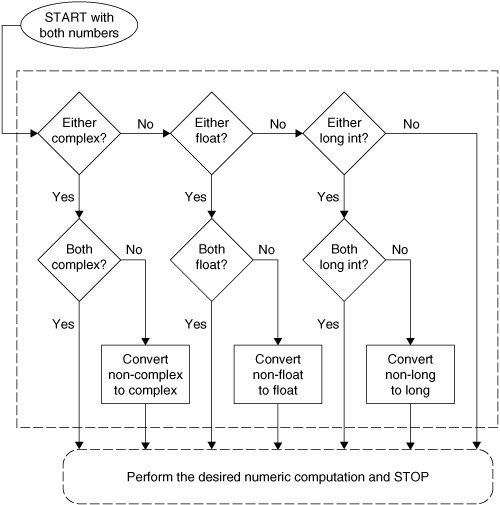
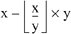

5.5. OperatorsNumeric types support a wide variety of operators, ranging from the standard type of operators to operators created specifically for numbers, and even some that apply to integer types only. 5.5.1. Mixed-Mode OperationsIt may be hard to remember, but when you added a pair of numbers in the past, what was important was that you got your numbers correct. Addition using the plus ( + ) sign was always the same. In programming languages, this may not be as straightforward because there are different types of numbers. When you add a pair of integers, the + represents integer addition, and when you add a pair of floating point numbers, the + represents double-precision floating point addition, and so on. Our little description extends even to non-numeric types in Python. For example, the + operator for strings represents concatenation, not addition, but it uses the same operator! The point is that for each data type that supports the + operator, there are different pieces of functionality to "make it all work," embodying the concept of overloading. Now, we cannot add a number and a string, but Python does support mixed mode operations strictly between numeric types. When adding an integer and a float, a choice has to be made as to whether integer or floating point addition is used. There is no hybrid operation. Python solves this problem using something called numeric coercion. This is the process whereby one of the operands is converted to the same type as the other before the operation. Python performs this coercion by following some basic rules. To begin with, if both numbers are the same type, no conversion is necessary. When both types are different, a search takes place to see whether one number can be converted to the other's type. If so, the operation occurs and both numbers are returned, one having been converted. There are rules that must be followed since certain conversions are impossible, such as turning a float into an integer, or converting a complex number to any non-complex number type. Coercions that are possible, however, include turning an integer into a float (just add ".0") or converting any non-complex type to a complex number (just add a zero imaginary component, e.g., "0j"). The rules of coercion follow from these two examples: integers move toward float, and all move toward complex. The Python Language Reference Guide describes the coerce() operation in the following manner.
The flowchart shown in Figure 5-1 illustrates these coercion rules. Figure 5-1. Numeric coercion Automatic numeric coercion makes life easier for the programmer because he or she does not have to worry about adding coercion code to his or her application. If explicit coercion is desired, Python does provide the coerce() built-in function (described later in Section 5.6.2). The following is an example showing you Python's automatic coercion. In order to add the numbers (one integer, one float), both need to be converted to the same type. Since float is the superset, the integer is coerced to a float before the operation happens, leaving the result as a float: >>> 1 + 4.5 5.5 5.5.2. Standard Type OperatorsThe standard type operators discussed in Chapter 4 all work as advertised for numeric types. Mixed-mode operations, described above, are those which involve two numbers of different types. The values are internally converted to the same type before the operation is applied. Here are some examples of the standard type operators in action with numbers: >>> 5.2 == 5.2 True >>> -719 >= 833 False >>> 5+4e >= 2-3e True >>> 2 < 5 < 9 # same as ( 2 < 5 )and ( 5 < 9 ) True >>> 77 > 66 == 66 # same as ( 77 > 66 )and ( 66 == 66 ) True >>> 0. < -90.4 < 55.3e2 != 3 < 181 False >>> (-1 < 1) or (1 < -1) True 5.5.3. Numeric Type (Arithmetic) OperatorsPython supports unary operators for no change and negation, + and -, respectively; and binary arithmetic operators +, -, *, /, %, and **, for addition, subtraction, multiplication, division, modulo, and exponentiation, respectively. In addition, there is a new division operator, //, as of Python 2.2.
DivisionThose of you coming from the C world are intimately familiar with classic divisionthat is, for integer operands, floor division is performed, while for floating point numbers, real or true division is the operation. However, for those who are learning programming for the first time, or for those who rely on accurate calculations, code must be tweaked in a way to obtain the desired results. This includes casting or converting all values to floats before performing the division. The decision has been made to change the division operator in some future version of Python from classic to true division and add another operator to perform floor division. We now summarize the various division types and show you what Python currently does, and what it will do in the future. Classic DivisionWhen presented with integer operands, classic division truncates the fraction, returning an integer (floor division). Given a pair of floating-point operands, it returns the actual floating-point quotient (true division). This functionality is standard among many programming languages, including Python. Example: >>> 1 / 2 # perform integer result (floor) 0 >>> 1.0 / 2.0 # returns actual quotient 0.5 True DivisionThis is where division always returns the actual quotient, regardless of the type of the operands. In a future version of Python, this will be the algorithm of the division operator. For now, to take advantage of true division, one must give the from__future__import division directive. Once that happens, the division operator ( / ) performs only true division: >>> from __future__ import division >>> >>> 1 / 2 # returns real quotient 0.5 >>> 1.0 / 2.0 # returns real quotient 0.5 Floor DivisionA new division operator ( // ) has been created that carries out floor division: it always truncates the fraction and rounds it to the next smallest whole number toward the left on the number line, regardless of the operands' numeric types. This operator works starting in 2.2 and does not require the __future__ directive above. >>> 1 // 2 # floors result, returns integer 0 >>> 1.0 // 2.0 # floors result, returns float 0.0 >>> -1 // 2 # move left on number line -1 There were strong arguments for as well as against this change, with the former from those who want or need true division versus those who either do not want to change their code or feel that altering the division operation from classic division is wrong. This change was made because of the feeling that perhaps Python's division operator has been flawed from the beginning, especially because Python is a strong choice as a first programming language for people who aren't used to floor division. One of van Rossum's use cases is featured in his "What's New in Python 2.2" talk: def velocity(distance, totalTime):
rate = distance / totalTimeAs you can tell, this function may or may not work correctly and is solely dependent on at least one argument being a floating point value. As mentioned above, the only way to ensure the correct value is to cast both to floats, i.e., rate = float(distance) / float(totalTime). With the upcoming change to true division, code like the above can be left as is, and those who truly desire floor division can use the new double-slash ( // ) operator. Yes, code breakage is a concern, and the Python team has created a set of scripts that will help you convert your code to using the new style of division. Also, for those who feel strongly either way and only want to run Python with a specific type of division, check out the -Qdivision_style option to the interpreter. An option of -Qnew will always perform true division while -Qold (currently the default) runs classic division. You can also help your users transition to new division by using -Qwarn or -Qwarnall. More information about this big change can be found in PEP 238. You can also dig through the 2001 comp.lang.python archives for the heated debates if you are interested in the drama. Table 5.2 summarizes the division operators in the various releases of Python and the differences in operation when you import new division functionality.
ModulusInteger modulo is straightforward integer division remainder, while for float, it is the difference of the dividend and the product of the divisor and the quotient of the quantity dividend divided by the divisor rounded down to the closest integer, i.e.,x - (math.floor(x/y) * y), or  For complex number modulo, take only the real component of the division result, i.e., x - (math.floor((x/y).real) * y). ExponentiationThe exponentiation operator has a peculiar precedence rule in its relationship with the unary operators: it binds more tightly than unary operators to its left, but less tightly than unary operators to its right. Due to this characteristic, you will find the ** operator twice in the numeric operator charts in this text. Here are some examples: >>> 3 ** 2 9 >>> -3 ** 2 # ** binds tighter than - to its left -9 >>> (-3) ** 2 # group to cause - to bind first 9 >>> 4.0 ** -1.0 # ** binds looser than - to its right 0.25 In the second case, it performs 3 to the power of 2 (3-squared) before it applies the unary negation. We need to use the parentheses around the "-3" to prevent this from happening. In the final example, we see that the unary operator binds more tightly because the operation is 1 over quantity 4 to the first power ¼1 or ¼. Note that 1 / 4 as an integer operation results in an integer 0, so integers are not allowed to be raised to a negative power (it is a floating point operation anyway), as we will show here: >>> 4 ** -1 Traceback (innermost last): File "<stdin>", line 1, in ? ValueError: integer to the negative power SummaryTable 5.3 summarizes all arithmetic operators, in shaded hierarchical order from highest-to-lowest priority. All the operators listed here rank higher in priority than the bitwise operators for integers found in Section 5.5.4.
Here are a few more examples of Python's numeric operators: >>> -442 - 77 -519 >>> >>> 4 ** 3 64 >>> >>> 4.2 ** 3.2 98.7183139527 >>> 8 / 3 2 >>> 8.0 / 3.0 2.66666666667 >>> 8 % 3 2 >>> (60. - 32.) * ( 5. / 9. ) 15.5555555556 >>> 14 * 0x04 56 >>> 0170 / 4 30 >>> 0x80 + 0777 639 >>> 45L * 22L 990L >>> 16399L + 0xA94E8L 709879L >>> -2147483648L - 52147483648L -54294967296L >>> 64.375+1j + 4.23-8.5j (68.605-7.5j) >>> 0+1j ** 2 # same as 0+(lj**2) (-1+0j) >>> 1+1j ** 2 # same as 1+(lj**2) 0j >>> (1+1j) ** 2 2j Note how the exponentiation operator is still higher in priority than the binding addition operator that delimits the real and imaginary components of a complex number. Regarding the last example above, we grouped the components of the complex number together to obtain the desired result. 5.5.4. *Bit Operators (Integer-Only)Python integers may be manipulated bitwise and the standard bit operations are supported: inversion, bitwise AND, OR, and exclusive OR (aka XOR), and left and right shifting. Here are some facts regarding the bit operators:
The bit inversion operator ( ~ ) has the same precedence as the arithmetic unary operators, the highest of all bit operators. The bit shift operators ( << and >> ) come next, having a precedence one level below that of the standard plus and minus operators, and finally we have the bitwise AND, XOR, and OR operators (&, ^, | ), respectively. All of the bitwise operators are presented in the order of descending priority in Table 5.4.
Here we present some examples using the bit operators using 30 (011110), 45 (101101), and 60 (111100): >>> 30 & 45 12 >>> 30 | 45 63 >>> 45 & 60 44 >>> 45 | 60 61 >>> ~30 -31 >>> ~45 -46 >>> 45 << 1 90 >>> 60 >> 2 15 >>> 30 ^ 45 51 |